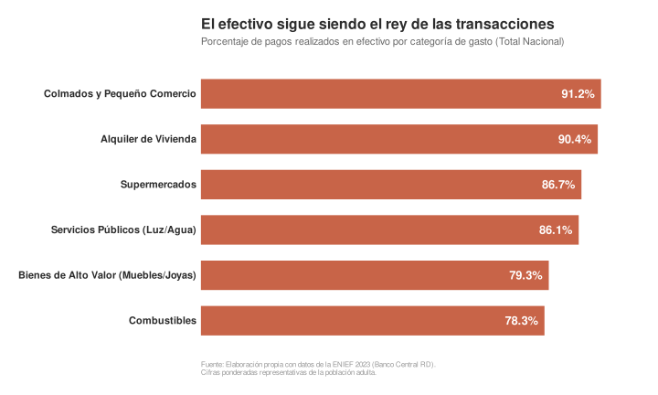
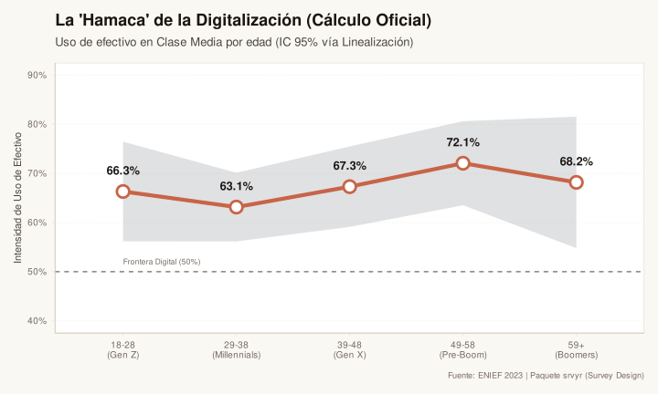
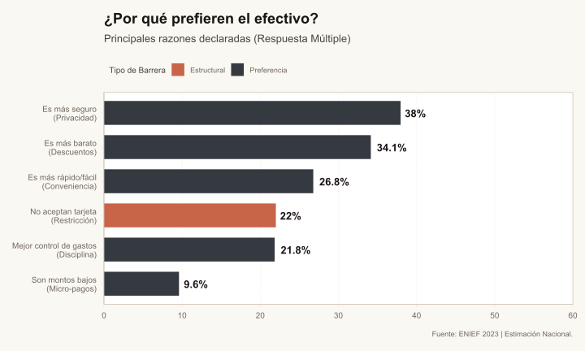
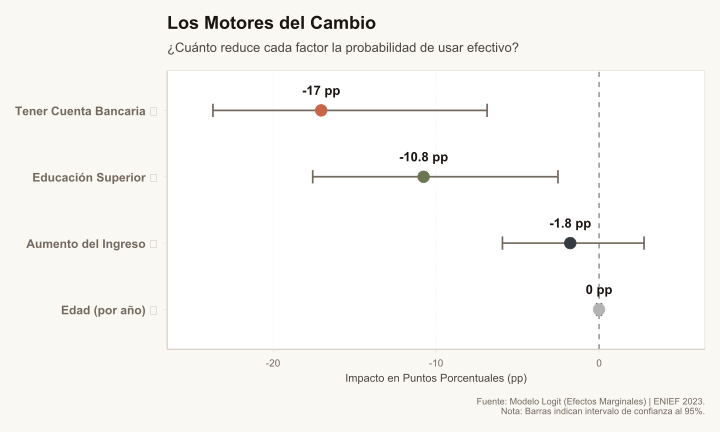
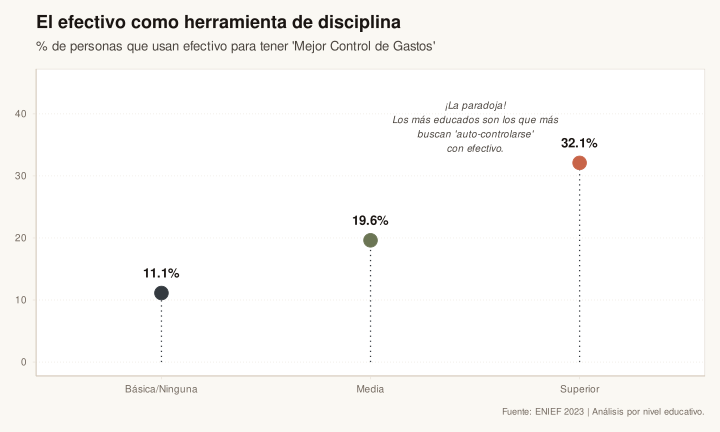

El Rey Efectivo: La resistencia del billete en la era digital
Econometría
Economía Dominicana
La república en un gráfico
Un análisis econométrico de la ENIEF revela una verdad incómoda: a pesar del auge digital, el 91% de los pagos cotidianos en RD siguen siendo en efectivo. ¿Por qué ni la edad ni el ingreso logran romper esta barrera?
En Resumen
- El efectivo es omnipresente: Domina el 91% de las compras en bajo valor y el 79% en bienes de alto valor.
- Rompe barreras demográficas: Ni la edad ni el ingreso alto eliminan su uso.
- La Infraestructura es clave: Tener cuenta bancaria es el predictor #1 de digitalización (+17 pp).
- Paradoja Educativa: Los usuarios más educados usan efectivo deliberadamente para disciplinar sus gastos.
Vivimos en el siglo XXI. Internet en casa, teléfonos inteligentes en el bolsillo, laptops y computadoras en casi cualquier espacio de trabajo. La banca en línea se ha convertido en uno de los avances más visibles de la última década.
Con este panorama, es fácil pensar que el efectivo ya cumplió su ciclo, que los billetes y las monedas están siendo desplazados por transferencias electrónicas y tarjetas. ¿Para qué cargar dinero en efectivo cuando todo parece estar a un clic de distancia?
Sin embargo, los datos cuentan otra historia. La Encuesta Nacional de Inclusión y Educación Financiera (ENIEF 2023) muestra que, lejos de desaparecer, el efectivo sigue teniendo un peso importante en la vida económica del país.
• • •
Efectivo: el rey de las transacciones
Juan se desplaza hacia su trabajo cada mañana en un concho, María compra los ingredientes para la comida del día en el colmado, Pedro juega la lotería en la esquina y Ana paga el combustible en la gasolinera. ¿Qué tienen en común estas actividades? Todas ellas se realizan mayormente en efectivo.
Somos conscientes de que así funciona el país, pero ¿cómo se ve esa imagen una vez que la cuantificamos? Es aún más reveladora: todos pensamos en compras y transacciones de montos bajos, pero la realidad es que el efectivo domina en casi todos los rangos de monto.
91.2%
De las transacciones de bajo costo se pagan en efectivo
Lo sorprendente no es encontrar que el efectivo domina en compras diarias de bajo monto, sino que su hegemonía se extiende incluso a transacciones de mayor valor. Desde pagar el alquiler hasta adquirir bienes de alto valor, el efectivo sigue siendo la opción principal en la mayoria de casos. A nivel porcentual el comprar el refresco en el colmado (91.2%) supera tan solo por un punto porcentual el pagar el alquiler. Incluso en compras de bienes de alto valor, donde uno esperaría una mayor adopción de métodos digitales, el efectivo mantiene una presencia significativa (79.3%).
Ante datos tan contundentes, surge la pregunta: ¿qué factores influyen en esta preferencia por el efectivo? ¿Es una cuestión de edad, ingresos o quizás educación financiera?
Desmitificando mitos: edad e ingresos
Una hipótesis común es que los jóvenes, más familiarizados con la tecnología, se inclinan fuertemente hacia métodos digitales de pago, mientras que los adultos mayores son los que inflan esos datos del efectivo. Esto tiene trampa. Si bien es cierto que los jóvenes tienden a usar más métodos digitales, el uso del efectivo sigue siendo alto en todos los grupos etarios.
Nunca disminuye del 65%, incluso en los grupos más jóvenes de la encuesta, lo cual quiere decir que la mayoría de los jóvenes dominicanos también usan efectivo regularmente por razones que van más allá de la edad.

Otro mito común es que los ingresos más altos se traducen en una mayor adopción de métodos digitales. Sin embargo, los datos muestran que incluso entre los grupos de mayores ingresos, el efectivo sigue siendo predominante. Aunque hay una ligera disminución en el uso del efectivo a medida que aumentan los ingresos, la mayoría de las personas en todos los niveles de ingresos continúan utilizando efectivo regularmente.
“El segmento más alto de ingresos sigue utilizando efectivo en casi un 60% de las transacciones cotidianas, desafiando la idea de que es solo para los menos favorecidos.”
En resumen, ni la edad ni el nivel de ingresos parecen ser factores determinantes para abandonar el uso del efectivo en República Dominicana. La preferencia por el efectivo es un fenómeno complejo que va más allá de estas variables demográficas. Por suerte la encuesta incluye muchas otras variables que pueden ayudar a entender este fenómeno, las cuales exploraremos a continuacion.
Más allá de la demografía: ¿Por qué el efectivo sigue reinando?
Si la edad y el ingreso no son suficientes para explicar esta hegemonía, debemos dejar de mirar al usuario y empezar a mirar el entorno. Al analizar las razones declaradas por los encuestados, encontramos dos fuerzas poderosas que actúan en direcciones opuestas: una barrera física y una barrera psicológica.
1. La Barrera Física: “Aquí no aceptamos eso”
A menudo, el debate sobre la digitalización asume que el usuario tiene la libertad de elegir. Los datos de la ENIEF muestran que esa libertad es ilusoria en gran parte de la economía cotidiana. Muchos comercios, especialmente los pequeños, no aceptan pagos digitales. Esto crea una barrera física que obliga a los consumidores a recurrir al efectivo, independientemente de sus preferencias personales. Segun datos de la encuesta, un 22% de los encuestados mencionan que no usan métodos digitales porque “el comercio no los acepta”.

2. La Barrera Psicológica: seguridad y descuentos
Más allá de las limitaciones físicas, existen barreras psicológicas que refuerzan el uso del efectivo. Muchos consumidores perciben el efectivo como una forma más segura de manejar su dinero, evitando riesgos asociados con fraudes digitales o problemas técnicos. Además, la percepción de que ciertos comercios ofrecen descuentos o mejores precios por pagos en efectivo refuerza esta preferencia, lo cual es impulsado por el gran grado de informalidad en la economía dominicana. Ambos con un 38 y 34% respectivamente según la encuesta. por lo que no es solo una cuestión de disponibilidad, sino también de confianza y percepción de valor.
• • •
Los Motores del Cambio: ¿Qué pesa más?
Despues de observar estos datos, queda claro como el efectivo logra tal dominio en la economia dominicana. La pregunta logica luego de esto es una: ¿Que se puede hacer para cambiar esta realidad? y si bien es cierto el cambio cultural es un proceso lento, la infraestructura puede acelerarlo o frenarlo. Y es que mediante un pequeno modelo a partir de los datos de la encuesta, se puede observar como el simple hecho de tener una cuenta bancaria, aumenta en gran medida el hecho de utilizar metodos digitales de pago. Para ser aun más especificos, tener una cuenta bancaria aumenta en un 17 puntos porcentuales la probabilidad de usar metodos digitales de pago en transacciones cotidianas.

17 pp
Aumento en la probabilidad de ser digital al tener cuenta bancaria
Estos hallazgos sugieren que las políticas destinadas a aumentar la inclusión financiera, como facilitar el acceso a cuentas bancarias y promover la educación financiera, podrían ser estrategias efectivas para reducir la dependencia del efectivo. Al mejorar la infraestructura financiera y educar a la población sobre los beneficios y seguridad de los métodos digitales, se podría fomentar un cambio gradual en los hábitos de pago. No por nada, tener educación superior también tiene un impacto positivo en la adopción de métodos digitales, aunque en menor medida siguen siendo 10 puntos porcentuales.
Dato Curioso
La Paradoja de la Educación: Un porcentaje considerable de personas con educación superior utilizan efectivo deliberadamente para un “mejor control de sus finanzas”. Esto sugiere que usan la “fricción” del efectivo como una herramienta de disciplina presupuestaria.

Conclusión: El Efectivo no es solo un medio de pago, es un fenómeno cultural
El análisis de la ENIEF 2023 nos deja una lección de humildad frente a los datos. El efectivo sigue siendo el rey indiscutible en República Dominicana (dominando el 91% de las transacciones cotidianas), pero las razones detrás de este reinado desafían nuestra intuición.
El modelo econométrico derribó los mitos habituales: ni la edad ni el nivel de ingresos explicaron el comportamiento. Un joven adinerado tiene la misma probabilidad de usar efectivo que un adulto mayor de clase media si ambos enfrentan las mismas barreras.
La hegemonía del efectivo no es, por tanto, un síntoma de “atraso cultural”, sino el resultado de dos fuerzas muy lógicas:
Una barrera estructural: La falta de aceptación en comercios (la infraestructura) pesa el doble que la educación.
Una utilidad psicológica: Incluso los más educados eligen el billete como herramienta de autocontrol financiero.
Para digitalizar la economía, no basta con esperar un relevo generacional o campañas de educación. La solución requiere reducir la fricción: que pagar con tarjeta sea tan fácil, universal y “doloroso” (para el control de gastos) como entregar un billete de cien pesos. Mientras el efectivo sea la opción de menor resistencia, seguirá ocupando el trono.
Fuentes de Datos & Referencias
Banco Central R.D. (2023)
"Encuesta Nacional de Inclusión y Educación Financiera (ENIEF)". Fuente primaria de los microdatos utilizados para calcular la hegemonía del efectivo y el modelo de regresión logística.
Descargar Microdatos (Excel) ↗Banco Central R.D. (2019)
"ENIEF 2019: Primera Encuesta de Inclusión". Base de datos utilizada para la validación cruzada y comparación histórica de la evolución de la tenencia de productos financieros.
Ver histórico ↗Prelec, D. & Loewenstein, G. (1998)
"The Red and the Black: Mental Accounting of Savings and Debt". Estudio seminal que introduce el concepto de "Pain of Paying" (Dolor de Pagar), utilizado en este artículo para explicar la preferencia por efectivo en segmentos educados.
Ver Abstract Académico ↗